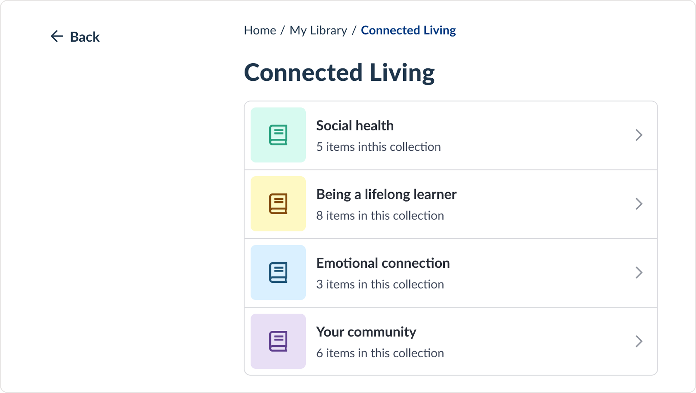

This app helps older adults manage their health by collecting assessment data, building a health profile, and recommending wellness programs and educational resources. It also generates reports and health trends based on the assessments they take. Over time, however, the product accumulated significant UX debt:

Resource library page was never iterated on from its initial state: a plain, text-heavy list that looked and felt overwhelming
The homepage lacked visual interest, and new items were added without cohesive planning or design thinking.

Recommendations were non-engaging and hard to find, and they were one of the key value prepositions of the app!
User, client, and stakeholder feedback confirmed what we had suspected:
“There’s too much going on here. I don’t know where to start.”
“The homepage feels blah and not fun. Can we take it up a notch?”
“I wish I could go back to that one video, but I forgot what it was and there are so many folders here!”
“It’s hard to find any reports once I’ve completed my questionnaire.”
Users were unimpressed with the product and overlooked key features, like the very recommendations meant to support their health goals.